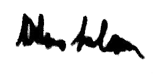

Abdus Salam was born in Jhang, a small town in what is now Pakistan, in 1926. His father was an official in the Department of Education in a poor farming district. His family has a long tradition of piety and learning.
When he cycled home from Lahore, at the age of 14, after gaining the highest marks ever recorded for the Matriculation Examination at the University of the Punjab, the whole town turned out to welcome him. He won a scholarship to Government College, University of the Punjab, and took his MA in 1946. Read More.....
21 November 1996) was a Pakistani theoretical physicist and a Nobel Prize laureate. He shared the 1979 Nobel Prize in Physics with Sheldon Glashow and Steven Weinberg for his contribution to the electroweak unification theory. He was the first Pakistani and the first from an Islamic country to receive a Nobel Prize in science and the second from an Islamic country to receive any Nobel Prize, after Anwar Sadat of Egypt.
Salam was scientific advisor to the Ministry of Science and Technology in Pakistan from 1960 to 1974, a position from which he played a major and influential role in the development of the country's science infrastructure. Salam contributed to numerous developments in theoretical and particle physics in Pakistan. He was the founding director of the Space and Upper Atmosphere Research Commission (SUPARCO), and responsible for the establishment of the Theoretical Physics Group (TPG).For this, he is viewed as the "scientific father"of this program. In 1974, Abdus Salam departed from his country, in protest, after the Parliament of Pakistan passed unanimously a parliamentary bill declaring members of the Ahmadiyya Muslim community, to which Salam belonged, non-Muslims. In 1998, following the country's Chagai-I nuclear tests, the Government of Pakistan issued a commemorative stamp, as a part of "Scientists of Pakistan", to honour the services of Salam.
Salam's notable achievements include the Pati-Salam model, magnetic photon, vector meson, Grand Unified Theory, work on supersymmetry and, most importantly, electroweak theory, for which he was awarded the Nobel Prize. Salam made a major contribution in quantum field theory and in the advancement of Mathematics at Imperial College London. With his student, Riazuddin, Salam made important contributions to the modern theory on neutrinos, neutron stars and black holes, as well as the work on modernising quantum mechanics and quantum field theory. As a teacher and science promoter, Salam is remembered as a founder and scientific father of mathematical and theoretical physics in Pakistan during his term as the chief scientific advisor to the president.Salam heavily contributed to the rise of Pakistani physics within the global physics community.Up until shortly before his death, Salam continued to contribute to physics, and to advocate for the development of science in third-world countries. Read More.....
Youth And Education
Abdus Salam was born to Chaudhry Muhammad Hussain and Hajira Hussain in Jhang,into a Punjabi Muslim family that was part of the Ahmadiyya Movement in Islam. His grandfather, Gul Muhammad, was a religious scholar as well as a physician, while his father was an education officer in the Department of Education of Punjab State in a poor farming district.

Salam very early established a reputation throughout Punjab and later at the University of Cambridge for outstanding brilliance and academic achievement. At age 14, Salam scored the highest marks ever recorded for the matriculation (entrance) examination at the Punjab University.He won a full scholarship to the Government College University of Lahore, Punjab State, British India.Salam was a versatile scholar, interested in Urdu and English literature in which he excelled. After a month in Lahore, he went to Bombay to Study. In 1947, he came back to Lahore. But he soon picked up Mathematics as his concentration.Salam's mentor and tutors wanted him to become an English teacher, but Salam decided to stick with Mathematics As a fourth-year student there, he published his work on Srinivasa Ramanujan's problems in mathematics, and took his B.A. in Mathematics in 1944.
When he cycled home from Lahore, at the age of 14, after gaining the highest marks ever recorded for the Matriculation Examination at the University of the Punjab, the whole town turned out to welcome him. He won a scholarship to Government College, University of the Punjab, and took his MA in 1946.
His father wanted him to join the Indian Civil Service (ICS).In those days, the ICS was the highest aspiration for young university graduates and civil servants occupied a respected place in civil society.Respecting his father's wish, Salam tried for the Indian Railways but did not qualify for the service as he failed the medical optical tests. The results further concluded that Salam failed a mechanical test required by railway engineers to gain a commission in the Railways, and that he was too young to compete for the job.Therefore, the Railways rejected Salam's job application. While in Lahore, Salam went on to attend the graduate school of Government College University. He received his MA in Mathematics from the Government College University in 1946.
That same year, he was awarded a scholarship to St John's College, Cambridge, where he completed a BA degree with Double First-Class Honours in Mathematics and Physics in 1949. In 1950, he received the Smith's Prize from Cambridge University for the most outstanding pre-doctoral contribution to Physics. After finishing his degrees, Fred Hoyle advised Salam to spend another year in the Cavendish Laboratory to do research in experimental physics, but Salam had no patience for carrying out long experiments in the laboratory.Salam returned to Jhang and renewed his scholarship and returned to the United Kingdom to do his doctorate.
He obtained a PhD degree in theoretical physics from the Cavendish Laboratory at Cambridge. His doctoral thesis titled "Developments in quantum theory of fields" contained comprehensive and fundamental work in quantum electrodynamics.By the time it was published in 1951, it had already gained him an international reputation and the Adams Prize.During his doctoral studies, his mentors challenged him to solve within one year an intractable problem which had defied such great minds as Paul Dirac and Richard Feynman. Within six months, Salam had found a solution for the renormalization of meson theory. As he proposed the solution at the Cavendish Laboratory, Salam had attracted the attention of Hans Bethe, J. Robert Oppenheimer and Dirac.
CAREER
Academic Career
After receiving his doctorate in 1951, Salam returned to Lahore at the Government College University as a Professor of Mathematics where he remained till 1954. In 1952, he was appointed professor and Chair of the Department of Mathematics at the neighbouring University of the Punjab. In the latter capacity, Salam sought to update the university curriculum, introducing a course in Quantum mechanics as a part of the undergraduate curriculum.However, this initiative was soon reverted by the Vice-Chancellor, and Salam decided to teach an evening course in Quantum Mechanics outside the regular curriculum.While Salam enjoyed a mixed popularity in the university, he began to supervise the education of students who were particularly influenced by him. As a result, Riazuddin remained the only student of Salam who had the privilege to study under Salam at the undergraduate and post-graduate level in Lahore, and post-doctoral level in Cambridge University. In 1953, Salam was unable to establish a research institute in Lahore, as he faced strong opposition from his peers. In 1954, Salam took fellowship and became one of the earliest fellows of the Pakistan Academy of Sciences. As a result of 1953 Lahore riots, Salam went back to Cambridge and joined St John's College, and took a position as a professor of mathematics in 1954.In 1957, he was invited to take a chair at Imperial College, London, and he and Paul Matthews went on to set up the Theoretical Physics Department at Imperial College. As time passed, this department became one of the prestigious research departments that included well known physicists such as Steven Weinberg, Tom Kibble, Gerald Guralnik, C. R. Hagen, Riazuddin, and John Ward.
In 1957, Punjab University conferred Salam with an Honorary doctorate for his contribution in Particle physics. The same year with help from his mentor, Salam launched a scholarship programme for his students in Pakistan. Salam retained strong links with Pakistan, and visited his country from time to time.At Cambridge and Imperial College he formed a group of theoretical physicists, the majority of whom were his Pakistani students. At age 33, Salam became one of the youngest persons to be elected a Fellow of the Royal Society (FRS) in 1959. Salam took a fellowship at the Princeton University in 1959, where he met with J. Robert Oppenheimer and to whom he presented his research work on neutrinos. Oppenheimer and Salam discussed the foundation of electrodynamics, problems and their solution.His dedicated personal assistant was Jean Bouckley. In 1980, Salam became a foreign fellow of the Bangladesh Academy of Sciences.
Scientific Career
Early in his career, Salam made an important and significant contribution in quantum electrodynamics and quantum field theory, including its extension into particle and nuclear physics. In his early career in Pakistan, Salam was greatly interested in mathematical series and their relation to physics. Salam had played an influential role in the advancement of nuclear physics, but he maintained and dedicated himself to mathematics and theoretical physics and focused Pakistan to do more research in theoretical physics. However, he regarded nuclear physics (nuclear fission and nuclear power) as a non-pioneering part of physics as it had already "happened". Even in Pakistan, Salam was the leading driving force in theoretical physics, with many scientists he continued to influence and encourage to keep their work on theoretical physics.
Salam had a prolific research career in theoretical and high-energy physics. Salam had worked on theory of the neutrino - an elusive particle that was first postulated by Wolfgang Pauli in the 1930s. Salam introduced chiral symmetry in the theory of neutrinos. The introduction of chiral symmetry played crucial role in subsequent development of the theory of electroweak interactions. Salam later passed his work to Riazuddin, who made pioneering contributions in neutrinos. Salam introduced the massive Higgs bosons to the theory of the Standard Model, where he later predicted the existence of proton decay. In 1963, Salam published his theoretical work on the vector meson. The paper introduced the interaction of vector meson, photon (vector electrodynamics), and the renormalisation of vector mesons' known mass after the interaction. In 1961, Salam began to work with John Clive Ward on symmetries and electroweak unification. In 1964, Salam and Ward worked on a Gauge theory for the weak and electromagnetic interaction, subsequently obtaining SU(2) × U(1) model. Salam was convinced that all the elementary particle interactions are actually the gauge interactions. In 1968, together with Weinberg and Sheldon Glashow, Salam formulated the mathematical concept of their work. While in Imperial College, Salam, along with Glashow and Jeffrey Goldstone, mathematically proved the Goldstone's theorem, that a massless spin-zero object must appear in a theory as a result of spontaneous breaking of a continuous global symmetry. In 1967-8, Salam and Weinberg incorporated the Higgs mechanism into Glashow's discovery, giving it a modern form in electroweak theory, and thus theorised half of the Standard Model. In 1968, together with Weinberg and Sheldon Glashow, Salam finally formulated the mathematical concept of their work.
In 1966, Salam carried out pioneering work on a hypothetical particle. Salam showed the possible electromagnetic interaction between the Magnetic monopole and the C-violation, thus he formulated the magnetic photon.
Following the publication of PRL Symmetry Breaking papers in 1964, Steven Weinberg and Salam were the first to apply the Higgs mechanism to electroweak symmetry breaking. Salam provided a mathematical postulation for the interaction between the Higgs boson and the electroweak symmetry theory.
In 1972, Salam began to work with Indian-American theoretical physicist Jogesh Pati. Pati wrote to Salam several times expressing interest to work under Salam's direction, in response to which Salam eventually invited Pati to the ICTP seminar in Pakistan. Salam suggested to Pati that there should be some deep reason why the protons and electrons are so different and yet carry equal but opposite electric charge. Protons are composed of quarks, but the electroweak theory was concerned only with the electrons and neutrinos, with nothing postulated about quarks. If all of nature's ingredients could be brought together in one new symmetry, it might reveal a reason for the various features of these particles and the forces they feel. This led to the development of Pati-Salam model in particle physics. In 1973, Salam and Jogesh Pati were the first to notice that since Quarks and Leptons have very similar SU(2) × U(1) representation content, they all may have similar entities. They provided a simple realisation of the quark-lepton symmetry by postulating that lepton number was a fourth quark colour, dubbed "violet".
Physicists had believed that there were four fundamental forces of nature: the gravitational force, the strong and weak nuclear forces, and the electromagnetic force.Salam had worked on the unification of these forces from 1959 with Glashow and Weinberg. While at Imperial College London, Salam successfully showed that weak nuclear forces are not really different from electromagnetic forces, and two could inter-convert. Salam provided a theory that shows the unification of two fundamental forces of nature, weak nuclear forces and the electromagnetic forces, one into another. Glashow had also formulated the same work, and the theory was combined in 1966. In 1967, Salam proved the electroweak unification theory mathematically, and finally published the papers. For this achievement, Salam, Glashow, and Weinberg were awarded the Nobel Prize in Physics in 1979. The Nobel Prize Foundation paid tribute to the scientists and issued a statement saying: "For their contributions to the theory of the unified weak and electromagnetic interaction between elementary particles, including, inter alia, the prediction of the weak neutral current". Salam took the Nobel Prize medal to the house of his former professor, Anilendra Ganguly, who taught him at the Sanatan Dharma College in Lahore, and placed the medal around his neck, stating "Mr Anilendra Ganguly this medal is a result of your teaching and love of mathematics that you instilled in me". In the 1970s Salam continued trying to unify forces by including the strong interaction in a grand unified theory.
Government Work
Abdus Salam returned to Pakistan in 1960 to take charge of a government post given to him by President Ayub Khan. From her independence in 1947 after the Partition of India, Pakistan has never had a coherent science policy, and total expenditure on research and development was only ~1.0% of Pakistan's GDP. Even the Pakistan Atomic Energy Commission headquarters was located in a small room, and less than 10 scientists were working on fundamental physics concepts. Salam replaced Salimuzzaman Siddiqui as the Science Advisor, and became first Member (technical) of PAEC.
Salam expanded the web of physics research and development in Pakistan by sending more than 500 scientists abroad. In 1961 he approached President Khan to set up the country's first national space agency, thus on 16 September 1961 the Space and Upper Atmosphere Research Commission was established, with Salam as its first director. Before 1960, very little work on scientific development was done, and scientific activities in Pakistan were almost diminished. [clarify] Salam called Ishfaq Ahmad, a nuclear physicist, who had left for Switzerland where he joined CERN, back to Pakistan. With the support of Salam, PAEC established PAEC Lahore Center-6, with Ishfaq Ahmad as its first director. In 1967, Salam became a central and administrative figure to lead the research in Theoretical and Particle physics. With the establishment of the Institute of Physics at Quaid-e-Azam University, research in theoretical and particle physics was engaged. Under Salam's direction, physicists tackled the greatest outstanding problems in physics and mathematics and their physics research reached a point that prompted worldwide recognition of Pakistani physicists.
From the 1950s, Salam had tried establishing high-powered research institutes in Pakistan, though he was unable to do so. He moved PAEC Headquarters to a bigger building, and established research laboratories all over the country. On the direction of Salam, Ishrat Hussain Usmani set up plutonium and uranium exploration committees throughout the country. In October 1961, Salam travelled to the United States and signed a space co-operation agreement between Pakistan and US. In November 1961, the US National Aeronautics and Space Administration (NASA) started to build a space facility - Flight Test Center (FTC) - at Sonmiani, a coastal town in Balochistan Province. Salam served as its first technical director.
Salam played an influential and significant role in Pakistan's development of nuclear energy for peaceful purposes. In 1964, he was made head of Pakistan's IAEA delegation and represented Pakistan for a decade.
The same year, Salam joined Munir Ahmad Khan - his lifelong friend and contemporary at Government College University. Khan was the first person in the IAEA that Salam had consulted about the establishment of the International Centre for Theoretical Physics (ICTP), a research physics institution, in Trieste, Italy. With an agreement signed with IAEA, the ICTP was set up with Salam as its first director. At IAEA, Salam had advocated the importance of nuclear power plants in his country. It was due to his effort that in 1965, Canada and Pakistan signed a nuclear energy co-operation deal. Salam obtained permission from President Ayub Khan - against the wishes of his own government functionaries - to set up the Karachi Nuclear Power Plant. Also in 1965, led by Salam, the United States and Pakistan signed an agreement in which the US provided Pakistan with a small research reactor (PARR-I). Salam had a long-held dream to establish a research institute in Pakistan, which he had advocated for on many occasions. In 1965 again, Salam and architect Edward Durell Stone signed a contract for the establishment of the Pakistan Institute of Nuclear Science and Technology (PINSTECH) at Nilore, Islamabad.
RESEARCH
Salam's notable achievements include the Pati-Salam model, magnetic photon, vector meson, Grand Unified Theory, work on supersymmetry and, most importantly, electroweak theory, for which he was awarded the Nobel Prize.
Space Programme
In early 1961, Salam approached President Khan to lay the foundations of Pakistan's first executive agency to co-ordinate space research. By executive order on 16 September 1961 the Space and Upper Atmosphere Research Commission (SUPARCO) was established with Salam founding director. Salam immediately travelled to the United States, where he signed a space co-operation agreement with the US Government. In November 1961, NASA built the Flight Test Center in Balochistan Province. During this time, Salam visited the Pakistan Air Force Academy where he met with Air Commodore (Brigadier-General) Wladyslaw Turowicz - a Polish military scientist and an aerospace engineer. Turowicz was made the first technical director of the space centre, and a programme of rocket testing ensued. In 1964, while in the US Salam visited the Oak Ridge National Laboratory, and met with nuclear engineers Salim Mehmud and Tariq Mustafa. Salam signed another agreement with the NASA which launched a programme to provide training to Pakistan's scientists and engineers. Both nuclear engineers returned to Pakistan and were inducted into SUPARCO.
Nuclear Weapons Programme
Salam knew the importance of nuclear technology in Pakistan, for civilian and peaceful purposes. But, according to his biographers, Salam played an ambiguous role in Pakistan's own atomic bomb project. As late as the 1960s, Salam made an unsuccessful proposal for the establishment of a nuclear fuel reprocessing plant, but it was deferred on economic grounds by Ayub Khan. According to Rehman, Salam's influence in nuclear development was diminished as late as 1974, and he became critical of Bhutto's control over science. But Salam personally did not terminate his connection with the scientists working in the theoretical physics division at PAEC. As early as 1972-73, he had been a great advocate for the atomic bomb project, but subsequently took a stance against it after he fell out with Bhutto over the Second Amendment to the Constitution of Pakistan which declared the Ahmaddiya denomination to be non-Islamic.
In 1965, Salam led the establishing of the nuclear research institute—PINSTECH. In 1965, the plutonium Pakistan Atomic Research Reactor (PARR-I) went critical under Salams' leadership. In 1973, Salam proposed the idea of establishing an annual college to promote scientific activities in the country to the Chairman of PAEC, Munir Khan, who accepted and fully supported the idea. This led to the establishment of the International Nathiagali Summer College on Physics and Contemporary Needs (INSC), where each year since 1976 scientists from all over the world come to Pakistan to interact with local scientists. The first annual INSC conference was held on advanced particle and nuclear physics.
In November 1971, Salam met with Zulfikar Ali Bhutto in his residence, and following Bhutto's advice, went to the United States to avoid the Indo-Pakistani War of 1971. Salam travelled to the US and returned to Pakistan with scientific literature about the Manhattan Project, and calculations involving atomic bombs. In 1972, the Government of Pakistan learned about the development status of the first atomic bomb completed under the Indian nuclear programme. On 20 January 1972, Salam, as Science Advisor to the President of Pakistan, managed and participated in a secret meeting of nuclear scientists with former Prime Minister, Zulfikar Ali Bhutto, in Multan, known as the 'Multan Meeting'. At this meeting Bhutto orchestrated the development of a deterrence programme. At the meeting, only I. H. Usmani protested, believing that the country had neither the facilities or talent to carry out such an ambitious and technologically remanding project, whilst Salam remained quiet. Here, Bhutto entrusted Salam and appointed Munir Khan as Chairman of PAEC, and head of the atomic bomb program, as Salam had supported Khan. A few months after the meeting, Salam, Khan, and Riazuddin, met with Bhutto in his residence where the scientists briefed him about the nuclear weapons program. After the meeting, Salam established the 'Theoretical Physics Group' (TPG) in PAEC. Salam led groundbreaking work at TPG until 1974.
An office was set up for Salam in the Prime Ministers' Secretariat by order of Bhutto. Salam immediately started to motivate and invite scientists to begin work with PAEC in the development of fission weapons. In December 1972, two theoretical physicists working at the International Centre for Theoretical Physics were asked by Salam to report to Munir Ahmad Khan, the scientific director of the program. This marked the beginning of the TPG, reporting directly to Salam. The TPG, in PAEC, was assigned to conduct research in fast neutron calculations, hydrodynamics (how the explosion produced by a chain reaction might behave), problems of neutron diffusion, and the development of theoretical designs of Pakistan's nuclear weapon devices. Later, the TPG under Riazuddin began to directly report to Salam, and the work on the theoretical design of the nuclear weapon was completed in 1977. In 1972, Salam formed the Mathematical Physics Group, under Raziuddin Siddiqui, that was charged, with TPG, with carrying out research in the theory of simultaneity during the detonation process, and the mathematics involved in the theory of nuclear fission. Following India's surprise nuclear test —Pokhran-I - in 1974, Munir Ahmad Khan had called a meeting to initiate work on an atomic bomb. Salam was there and Muhammad Hafeez Qureshi was appointed head of the Directorate of Technical Development (DTD) in PAEC.
The DTD was set up to co-ordinate the work of the various specialised groups of scientists and engineers working on different aspects of the atomic bomb. The word "bomb" was never used in this meeting, but the participants fully understood what was being discussed. In March 1974, Salam and Khan also established the Wah Group Scientist that was charged with manufacturing materials, explosive lenses and triggering mechanism development of the weapon. Following the setting up of DTD, Salam, Riazuddin and Munir Ahmad Khan, visited the Pakistan Ordnance Factories (POF) where they held talks with senior military engineers led by POF chairman Lieutenant-General Qamar Ali Mirza. It was there that the Corps of Engineers built the Metallurgical Laboratory in Wah Cantonment in 1976. Salam remained associated with the nuclear weapons programme until mid-1974, when he left the country after Ahmadi were declared non-Muslims by the Pakistani Parliament. His own relations with Prime minister Bhutto fell out and turned into open hostility after the Ahmadiyya Community was declared as not-Islamic; he lodged a public and powerful protest against Bhutto regarding this issue and gave great criticism to Bhutto over his control over science. In spite of this, Salam maintained close relations with the theoretical physics division at PAEC who kept him informed about the status of the calculations needed to calculate the performance of the atomic bomb, according to Norman Dombey. After seeing Indian aggression, the Siachen conflict in Northern Pakistan, followed by India's Operation Brasstacks in Southern Pakistan, Salam again renewed his ties with senior scientists working in the atomic bomb projects, who had kept him informed about the scientific development of the program. In the 1980s, Salam personally approved many appointments and a large influx of Pakistani scientists to the associateship program at ICTP and CERN, and engaged in research in theoretical physics with his students at the ICTP.
In 2008, Indian scholar Ravi Singh noted in his book The Military Factor in Pakistan that, "in 1978, Abdus Salam with PAEC officials, paid a secret visit to China, and was instrumental in initiating industrial nuclear cooperation between the two countries." Although he had left the country, Salam did not hesitate to advise the PAEC and Theoretical and Mathematical Physics Group on important scientific matters, and kept his close association with TPG and PAEC.
Advocacy For Science
In 1964, Salam founded the International Centre for Theoretical Physics (ICTP), Trieste, in Italy and served as its director until 1993. In 1974, he founded the International Nathiagali Summer College (INSC) to promote science in Pakistan. The INSC is an annual meeting of scientists from all over the world who come to Pakistan and hold discussions on physics and science. Even today, the INSC holds annual meetings, and Salam's pupil Riazuddin has been its director since its start.
In 1997, the scientists at ICTP commemorated Salam and renamed ICTP as the "Abdus Salam International Centre for Theoretical Physics". Throughout the years, he served on a number of United Nations committees concerning science and technology in developing countries. Salam also founded the Third World Academy of Sciences (TWAS) and was a leading figure in the creation of a number of international centres dedicated to the advancement of science and technology.
During a visit to the Institute of Physics at Quaid-i-Azam University in 1979, Salam explained after receiving an award: Physicists believed there are four fundamental forces of nature; the gravitational force, the weak and strong nuclear force, and the electromagnetic force.[relevant?] Salam was a firm believer that "scientific thought is the common heritage of mankind", and that developing nations needed to help themselves, and invest in their own scientists to boost development and reduce the gap between the Global South and the Global North, thus contributing to a more peaceful world.
In 1981, Salam became a founding member of the World Cultural Council.
Although Salam left Pakistan, he did not terminate his connection to home. He continued inviting Pakistan's scientists to ICTP, and maintained a research programme for them. Many prominent scientists, including Ghulam Murtaza, Riazuddin, Kamaluddin Ahmed, Faheem Hussain, Raziuddin Siddiqui, Munir Ahmad Khan, Ishfaq Ahmad, and I. H. Usmani, considered him as their mentor and a teacher.
Personal Life
In 1949, age 23, Salam married his 22-year-old cousin Amtul Hafeez Hussain. The couple had three daughters and a son. According to Islamic law, a man may have more than one wife. In November 1967, Salam married the biophysicist Louise Johnson, with whom he had a son and a daughter.
In 1974, Salam was saddened when Pakistan's government passed a law declaring Ahmadis to be non-Muslims. In 1980, after he received the Nobel Prize, he was invited as an honored guest to the Quaid-e-Azam University in Pakistan's capital city, Islamabad. The ceremony was cancelled because extremists threatened to break Salam's legs if he turned up at the university.
In the mid-1980s, Salam began suffering from a degenerative neurological disorder. Eventually he was confined to a wheelchair. He retired from his chair at Imperial College in 1994, age 68.
Abdus Salam died peacefully, age 70, at home in Oxford on November 21, 1996. He was buried four days later in the Ahmadi city of Rabwah, Pakistan.
He was survived by his children and his wives. Click this link.....
Death
Abdus Salam died on 21 November 1996 at the age of 70 in Oxford, England, from progressive supranuclear palsy.
His body was returned to Pakistan and kept in Darul Ziafat, where some 13,000 men and women visited to pay their last respects.
Approximately 30,000 people attended his funeral prayers.
Salam was buried in Bahishti Maqbara, a cemetery established by the Ahmadiyya Community at Rabwah, Punjab, Pakistan,
next to his parents' graves. The epitaph on his tomb initially read "First Muslim Nobel Laureate".
The Pakistani government removed "Muslim" and left only his name on the headstone. They are the only nation to
officially declare that Ahmadis are non-Muslim. The word "Muslim" was initially obscured on the orders of a
local magistrate before moving to the national level. Under Ordinance XX of 1984, being an Ahmadi, he was considered
a non-Muslim according to the definition provided in the Second Amendment to the Constitution of Pakistan.
" His craving for nationalism is symbolized best by his wish to be buried in his own homeland... He loved his country and its soil. We projected him as a hero, a father, and role model for our young scientists... " Masud Ahmad, on Salam's legacy,
Legacy
Salam's work in Pakistan has been far reaching and regarded as highly influential. He is remembered by his peers and students as the "father of Pakistan's school of Theoretical Physics" as well as Pakistan's science. Salam was a charismatic and iconic figure, a symbol among them of what they were working or researching toward in their fields. His students, fellow scientists and engineers, remembered him as brilliant teacher, and engaging researcher who would also influence others to do the same.Salam founded the Space Research Commission of and was its first director. In 1998, the Government of Pakistan issued a commemorative stamp to honour Salam as part of its "Scientists of Pakistan" series. His alma mater, Government College Lahore, now a university, has the Abdus Salam Chair in Physics and Abdus Salam School of Mathematical Sciences named after him. The Abdus Salam Chair was also established in his honour at the Syed Babar Ali School of Science and Engineering in the Lahore University of Management Sciences. He made a significant contribution towards the 2012 success in the search for the Higgs boson.
Salam has been commemorated by noted and prominent Pakistani scientists, who were also his students. Many scientists have recalled their college experiences. Ghulam Murtaza, a professor of plasma physics at the Government College University and student of Salam, wrote:
When Dr. Salam was to deliver a lecture, the hall would be packed and although the subject was Particle Physics,
his manner and eloquence was such as if he was talking about literature. When he finished his lectures,
listeners would often burst into spontaneous applause and give him a standing ovation. People from all parts
of the world would come to Imperial College and seek Dr. Salam's help. He would give a patient hearing to everyone
including those who were talking nonsense. He treated everyone with respect and compassion and never belittled or
offended anyone. Dr. Salam's strength was that he could "sift jewels from the sand".
Documentaries on Abdus Salam
Salam - The Film
LLC started formally researching and developing a film on the science and life of Abdus Salam in 2004, two years after the producers had conceived of the idea. A fundraising teaser was released by Kailoola Productions to coincide with Salam's birth anniversary on 29 January 2017. The post-production phase of this documentary film, pending funding, is estimated at US$150,000. The film Salam: The First ****** Nobel Laureate, directed by the Indian-American documentary filmmaker Anand Kamalakar, was announced in 2018 and released on Netflix in October 2019.
Abdus Salam
Pilgrim Films released The Dream of Symmetry in September 2011. Their press release describes it as presenting "the extraordinary figure of Abdus Salam, who not only was an outstanding scientist but also a generous humanitarian and a valuable person. His rich and busy life was an endless quest for symmetry, that he pursued in the universe of physical laws and in the world of human beings."
Honours
Dr. Salam's genius was like a magic... And there was always an element of eastern mysticism in his ideas that left one wondering how to fathom his genius... Masud Ahmad, honoring Abdus Salam,
Salam was elected to the American Academy of Arts and Sciences in 1971, the United States National Academy of Sciences in 1979, and the American Philosophical Society in 1992.In 1997, scientists at ICTP renamed the institute as the Abdus Salam International Centre for Theoretical Physics in the honour of Salam. Salam's services have been recognised in Pakistan, as his students have openly spoken and stressed the importance of Science and Technology in Pakistan. In 1999, per the recommendation of Ishfaq Ahmad, the Government of Pakistan led the establishment of the Abdus Salam Chair in Physics at the Government College University. On 22 November 2009, the Director of the Abdus Salam International Centre for Theoretical Physics gifted the original Nobel Prize Certificate to his alma mater. In 2011, GCU's Salam Chair in Physics held a one-day-long conference that was attributed to Abdus Salam. Salam's students Ghulam Murtaza, Pervez Hoodbhoy, Riazuddin and Tariq Zaidi discussed the life and works of Salam, and brought to light his achievements in Pakistan and Physics. While covering the media converge on Salam's tribute, the News International, referred to Salam as the " great Pakistan scientist " .
In 1998, the Edward A. Bouchet-ICTP Institute was renamed as the Edward Bouchet Abdus Salam Institute. In 2003, the Government of Punjab created an institute of excellence for the Mathematical Sciences, the Abdus Salam School of Mathematical Sciences, in Salam's Alma mater - Government College University.
That it has taken nearly four decades for this country to honour a globally renowned scientist who was one of its own, is a sad reflection of the priorities that hold sway here... For Dr Salam was an Ahmadi, a persecuted minority in Pakistan, and his faith rather than his towering achievements was the yardstick by which he was judged. — Dawn,
In 2008, in an opinion piece, Daily Times called Salam " one of the greatest scientist Pakistan has ever produced "
In 2015, the Academy of Young Researchers and Scholars, Lahore, renamed its library as the "Abdus Salam Library". In the town of Vaughan, Ontario, Canada, near the headquarters of the Canadian branch of the Ahmadiyya Community, of which Abdus Salam was a member, the community has named a street after him, 'Abdus Salam Street'. Additionally, there are two annual Abdus Salam science fairs, one held in Canada and the other in the US. Each is organised as a National event for young scientists from the Ahmadiyya Community in an effort to motivate youth toward scientific endeavour.
On 6 December 2016, Pakistan's Prime Minister Nawaz Sharif approved the renaming of Quaid-i-Azam University's (QAU) physics centre to the Professor Abdus Salam Center for Physics. It was also announced that the Professor Abdus Salam Fellowship will be established, which will include five annual fully funded Pakistani PhD students in the field of Physics in "leading international universities".
In November 2020 English Heritage erected a blue plaque in Salam's honour in Putney, London, at the house that was his London home for almost 40 years.
Awards And Recognition
In 1979, Salam was awarded the 1979 Nobel Prize in Physics, along with Glashow and Weinberg, For their contributions to the theory of the unified weak and electromagnetic interaction between elementary particles, including, inter alia, the prediction of the weak neutral current. Salam received high civil and science awards from all over the world. Salam is recipient of first high civil awards - Star of Pakistan (1959) and the Nishan-e-Imtiaz (1979) - awarded by the President of Pakistan for Salams' outstanding services to Pakistan. The National Center for Physics (NCP) contains an Abdus Salam Museum dedicated to the life of Salam and his work as he discovered and formulated the Electroweak Theory. Below is the list of awards that were conferred to Salam in his lifetime.
- Nobel Prize in Physics (Stockholm, Sweden) (1979)
- Hopkins Prize (Cambridge University) for "the most outstanding contribution to Physics during 1957-1958"
- Adams Prize (Cambridge University) (1958)
- Fellow of the Royal Society (1959)
- Smith's Prize (Cambridge University) (1950)
- Sitara-e-Pakistan by the President of Pakistan for contribution to science in Pakistan (1959)
- Pride of Performance Award by the President of Pakistan (1958)
- First recipient of Maxwell Medal and Award (Physical Society, London) (1961)
- Hughes Medal (Royal Society, London) (1964)
- Atoms for Peace Award (Atoms for Peace Foundation) (1968)
- J. Robert Oppenheimer Memorial Prize and Medal (University of Miami) (1971)
- Guthrie Medal and Prize (1976)
- Sir Devaprasad Sarvadhikary Gold Medal (Calcutta University) (1977)
- Matteuci Medal (Accademia Nazionale dei Lincei, Rome) (1978)
- John Torrence Tate Medal (American Institute of Physics) (1978)
- Royal Medal (Royal Society, London) (1978)
- Nishan-e-Imtiaz by the President of Pakistan for outstanding performance in Scientific projects in Pakistan (1979)
- Einstein Medal (UNESCO, Paris) (1979)
- Shri R.D. Birla Award (India Physics Association) (1979)
- Order of Andres Bello (Venezuela) (1980)
- Order of Istiqlal (Jordan) (1980)
- Cavaliere de Gran Croce dell'Ordine al Merito della Repubblica Italiana (1980)
- Josef Stefan Medal (Josef Stefan Institute, Ljublijana) (1980)
- Gold Medal for Outstanding Contributions to Physics (Czechoslovak Academy of Sciences, Prague) (1981)
- Peace Medal (Charles University, Prague) (1981)
- Lomonosov Gold Medal (USSR Academy of Sciences) (1983)
- Premio Umberto Biancamano (Italy) (1986)
- Dayemi International Peace Award (Bangladesh) (1986)
- First Edinburgh Medal and Prize (Scotland) (1988)
- "Genoa" International Development of Peoples Prize (Italy) (1988)
- Honorary Knight Commander of the Order of the British Empire (1989)
- Catalunya International Prize (Spain) (1990)
- Copley Medal (Royal Society, London) (1990)
Awards Named After Salam
The Abdus Salam Award (also called the Salam Prize) is an award established to recognise high achievements and contributions in physical and natural sciences. In 1979, Riazuddin, Fayyazuddin and Asghar Qadir met with Salam, and presented the idea of creating an award to appreciate scientists, resident in Pakistan, in their respective fields. Salam donated the money he had won as he felt that he had no right use for the prize money. It was endowed by Asghar Qadir, Riazuddin and Fayyazuddin in 1980, and it was first awarded in 1981. The winners are selected by a committee (consisted of Aghar Qadir, Fayyazuddin, Riazuddin, and others) of the Center for Advanced Mathematics and Physics (CAMP), which administers the award. The Abdus Salam Medal is presented by the Third World Academy of Sciences in Trieste, Italy. First given in 1995, the award is presented to the people who have served the cause of science in the Developing World. The Abdus Salam Shield of Honor in Mathematics was initiated by the National Mathematical Society of Pakistan to promote and recognize quality research in Mathematics in 2015. It was awarded for the first time in 2016.
Contributions
Salam's primary focus was research on the physics of elementary particles. His particular numerous groundbreaking contributions included:
- two-component neutrino theory and the prediction of the inevitable parity violation in weak interaction;
- gauge unification of weak and electromagnetic interactions, the unified force is called the "Electroweak" force, a name given to it by Salam, and which forms the basis of the Standard Model in particle physics;
- predicted the existence of weak neutral currents, and W and Z bosons, before their experimental discovery
- symmetry properties of elementary particles; unitary symmetry;
- renormalization of meson theories;
- gravity theory and its role in particle physics; two tensor theory of gravity and strong interaction physics;
- unification of electroweak with strong nuclear forces, grand unification theory;
- related prediction of proton-decay;
- Pati-Salam model, a grand unification theory;
- Supersymmetry theory, in particular formulation of Superspace and formalism of superfields in 1974;
- the theory of supermanifolds, as a geometrical framework for understanding supersymmetry, in 1974;
- Supergeometry, the geometric basis for supersymmetry, in 1974;
- application of the Higgs mechanism to 'electroweak symmetry breaking';
- prediction of the magnetic photon in 1966;
Institutes Named After Abdus Salam
- Abdus Salam Centre for Physics (Department of Physics), Quaid-e-Azam University, Islamabad, Pakistan
- Abdus Salam National Centre for Mathematics (ASNCM), Government College University, Lahore, Pakistan.
- Abdus Salam Chair in Physics (ASCP), Government College University, Lahore, Pakistan.
- Abdus Salam International Centre for Theoretical Physics, Trieste, Italy.
- Abdus Salam School of Mathematical Sciences, Lahore, Pakistan
- The Edward Bouchet Abdus Salam Institute (EBASI)
| Born | 29 January 1926 Jhang, Punjab Province, British India (present day Punjab, Pakistan) |
|---|---|
| Died | 21 November 1996 (aged 70) Oxford, England, United Kingdom |
| Nationality | British Indian (1926-1947) Pakistani (1947-1996) |
| Alma Mater | Government College University Lahore (BA) University of Mumbai Punjab University (MA) St. John's College, Cambridge (PhD) |
| Known For | Electroweak theoryGoldstone bosonGrand Unified TheoryHiggs mechanismMagnetic photonNeutral currentPati-Salam modelQuantum mechanicsPakistan atomic research programPakistan space programPreonStandard ModelStrong gravitySuperfieldW and Z bosons |
| Spouse(s) | Amtul Hafeez Begum (m. 1949-1996) Louise Johnson (m. 1968-1996) |
| Children | 6 |
| Awards | Smith's Prize (1950) Adams Prize (1958) Sitara-e-Pakistan (1959) Hughes Medal (1964) Atoms for Peace Prize (1968) Royal Medal (1978) Matteucci Medal (1978) Nobel Prize in Physics (1979) Nishan-e-Imtiaz (1979) Lomonosov Gold Medal (1983) Copley Medal (1990) |
| Fields | Theoretical physics |
| Institutions | PAEC SUPARCO PINSTECH Punjab University Imperial College London Government College University University of Cambridge ICTP COMSATS TWAS Columbia University University of Karachi University of Chicago University of Houston Edward Bouchet Abdus Salam Institute |
| Thesis | Developments in quantum theory of fields (1952) |
| Doctoral Advisor | Nicholas Kemmer |
| Other Academic Advisors | Paul Matthews |
| Doctoral Students | Qaisar Shafi Michael Duff Daniel Afedzi Akyeampong Ali Chamseddine Robert Delbourgo Walter Gilbert John Moffat Yuval Ne'eman John Polkinghorne Ray Streater Riazuddin Fayyazuddin Masud Ahmad Partha Ghose Kamaluddin Ahmed John Taylor Ghulam Murtaza Christopher Isham[2] Munir Ahmad Rashid Peter West |
| Other Notable Students | Jonathan Ashmore Faheem Hussain Pervez Hoodbhoy Abdul Hameed Nayyar Ghulam Dastagir Alam |
| Influences | Paul Dirac Anilendra Ganguly |
Signature
by Abdus_Salam
